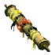

Шаманский свиток
Предметы / С врагов
Открыть в интерактивной вики →
| Вес | 3 |
|---|---|
| Цена | 5 |
Описание
Компонент, используемый для изготовления  Малая Фляга Мощи. Её создает
Малая Фляга Мощи. Её создает  Тиземлин в Рыбацкой Деревне.
Тиземлин в Рыбацкой Деревне.
Малая Фляга Мощи. Её создает Тиземлин в Рыбацкой Деревне.| Ингредиент для изготовления Малой фляги мощи. Изготавливает Тиземлин в Рыбацкой Деревне. |
Дроп
Применение
|
Как добыть
Получаем за победу над:
|